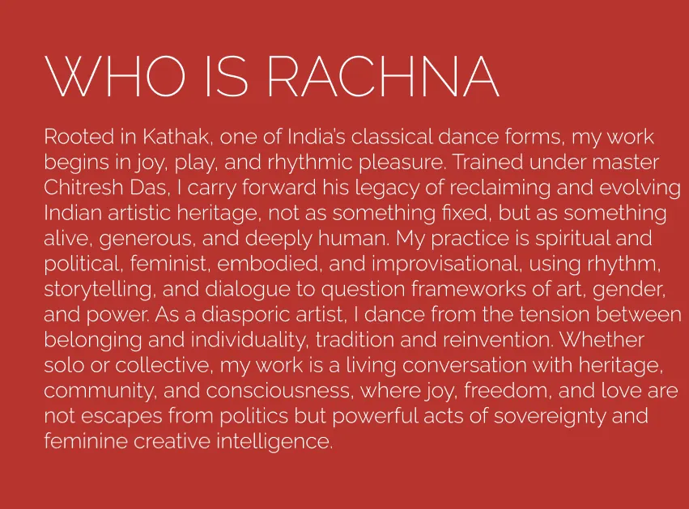
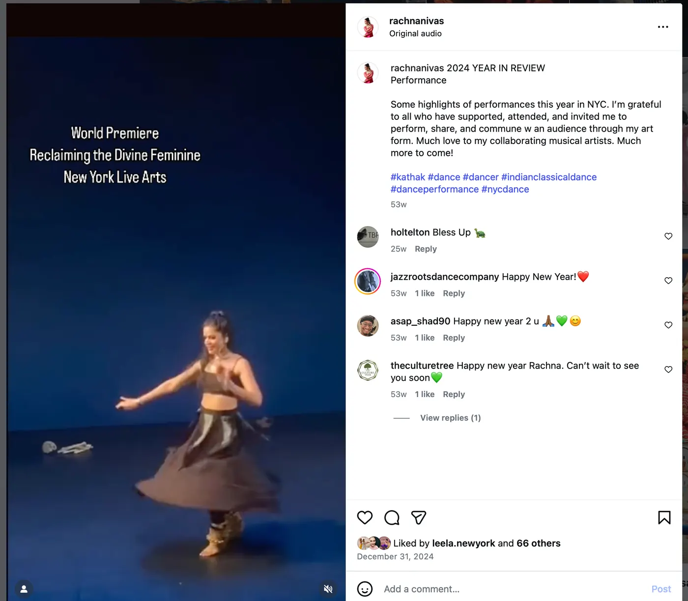
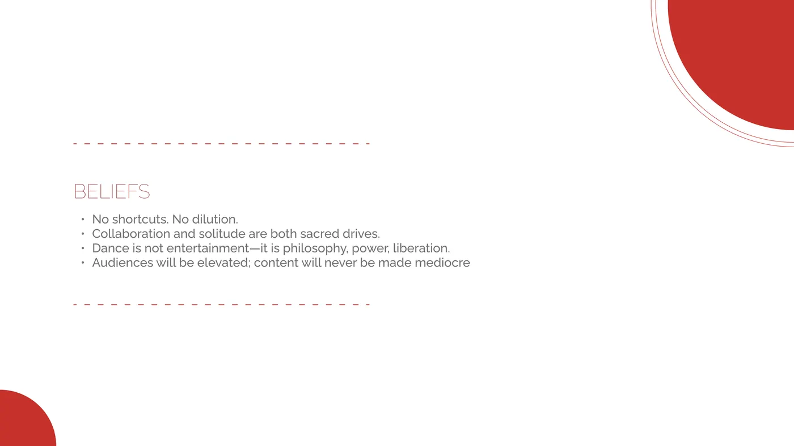
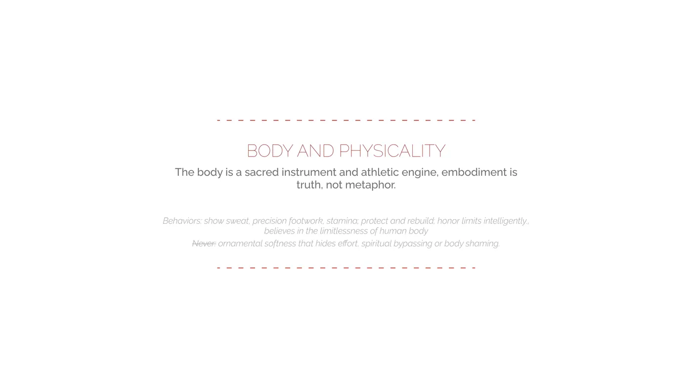
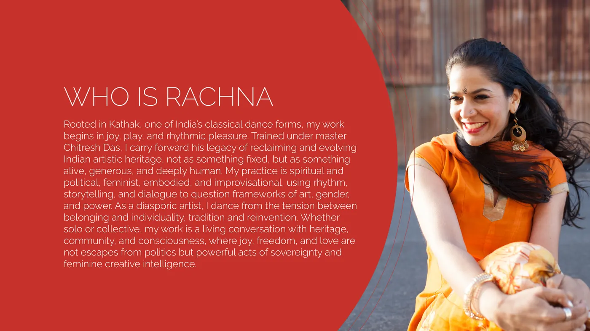
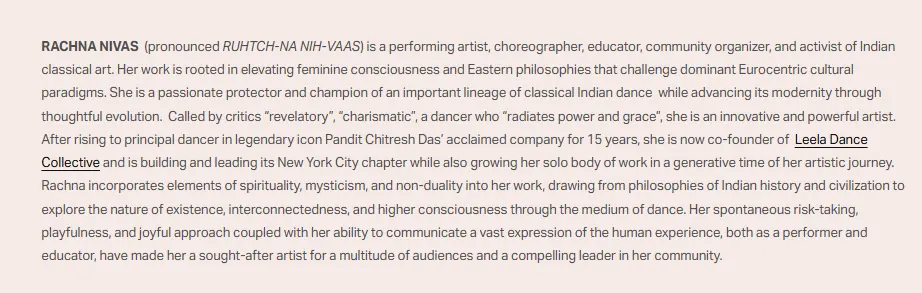
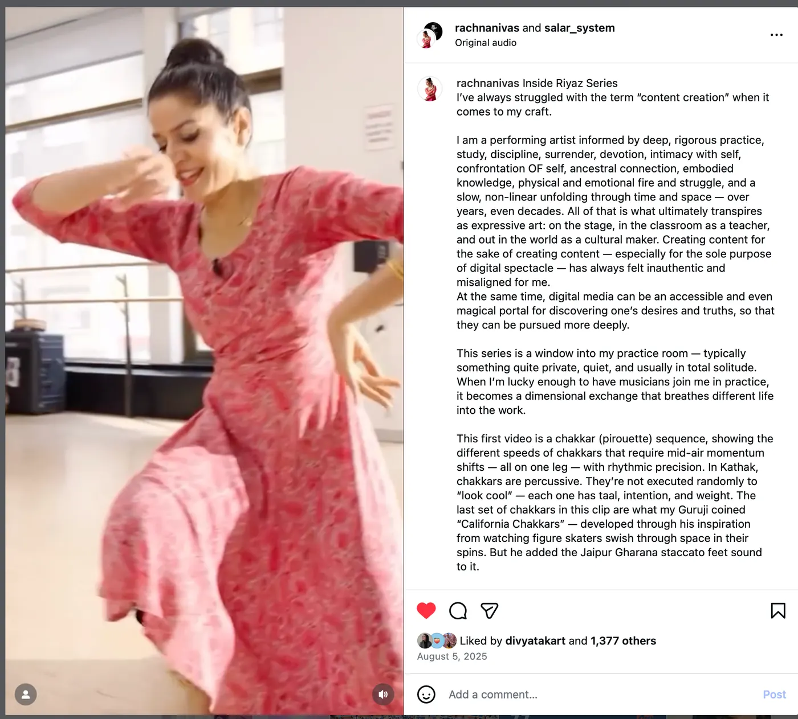

a case study — rachna nivas
Rachna Nivas came to us mid-fellowship season with her voice obscured by the 5000-year tradition she embodied. We spent a year with her finding the voice. The brand book was what we made at the end.
arrival
Rachna is a NYC-based Kathak artist, choreographer, educator, and activist. She came to us when she was applying for fellowships and residencies, and her voice kept getting lost — not in the writing, but under the weight of the 5000-year tradition she was carrying. The applications read like homages to the form. We read her website and her drafts and found the same thing every time: a case being made for why Kathak belonged in the room, with Rachna somewhere behind it.
“Her voice was getting obscured, lost in the weight of the tradition she embodied.”

the year of work
The work wasn’t copywriting. Rachna is already a storyteller — years on stage, years in the classroom, years as an activist. She can carry a room. What she needed was help bringing the skills she’d honed in person to the written form — so the writing sounded like her, not like a footnote to her tradition.

For most of a year we worked with her on that. Uncovering her motivations. Asking her to stop explaining Kathak and start speaking from inside it. Helping her show why she belonged, instead of making a case for it.
As her voice clarified, something else surfaced: she needed her own identity, separate from the guru sisters she’d built her early career with.
the artifact
The brand book came at the end. Three weeks of work after almost a year of conversations. What we put in it wasn’t new — it was what we’d already found, set down in a form her team could use without her in the room.
three weeks, at the end of the year.



A voice guide. Four beliefs. Rules for how to speak about the body. A visual guide for videographers and editors. The book isn’t the engagement. The book is what the engagement produced.
breaking the rules
Once the voice was there, the next pressure came from the usual place: make short videos, simplify for people who don’t know the form, post more often, feed the algorithm.
We told her to ignore all of it. Lean into what she already knew. Keep a tight frame through the video. Let the audience work a little. Own the written form.
The long-form, knowledge-forward posts pulled many times the engagement of the short ones. More importantly, a rising presence in the NYC arts scene — and a loop we’d been hoping for: authenticity bringing in more meaningful contacts, which brought in more meaningful collaborations, which sharpened the voice further.

